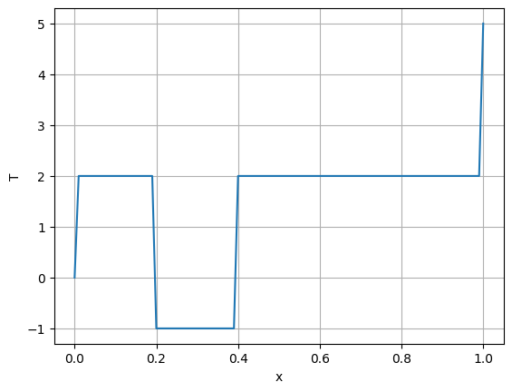
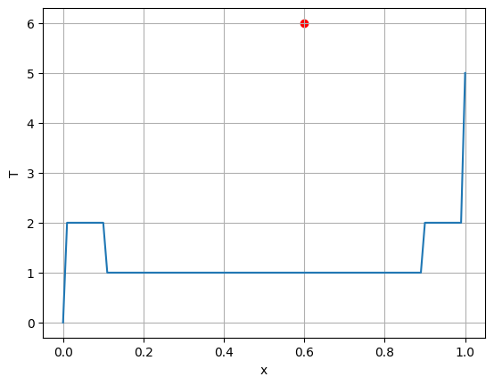
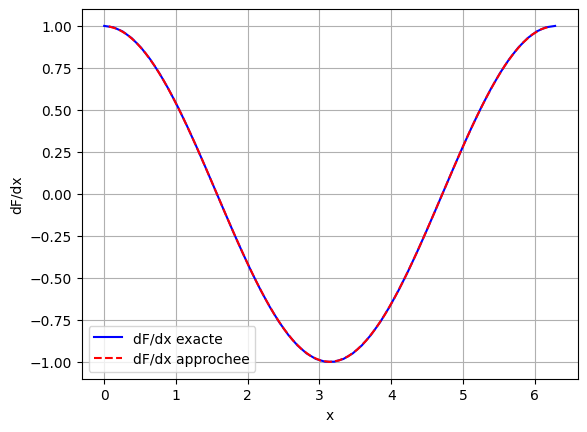

Tutoriel 4#
Se familiariser avec la discrétisation spatiale et les dérivées#
1. Discrétiser un domaine#
Pour résoudre une équation en 1D, il faut discrétiser l’espace : diviser le domaine en intervalles, et ne calculer la solution qu’en un ensemble de points. Nous découpons l’intervalle \([a,b]\) en nx points \(x_0, x_1, \ldots, x_{nx-1}\) séparés d’un pas \(dx\).
Une fois le domaine discrétisé, on y initialise une fonction (une concentration, une température), puis on peut en modifier la valeur à un indice donné.
import numpy as np
import matplotlib.pyplot as plt
a, b, nx = 0, 1, 101
x = np.linspace(a, b, nx)
dx = (b-a)/(nx-1)
print("longueur de x :", len(x), " dx =", dx)
T = np.ones(nx)*2 # une temperature egale a 2 partout
T[0] = 0 # premiere composante (x = a)
T[-1] = 5 # derniere composante (x = b)
T[int(nx/5):int(2*nx/5)] = -1 # entre le premier et le deuxieme cinquieme
plt.plot(x, T) ; plt.xlabel('x') ; plt.ylabel('T') ; plt.grid(True)
plt.show()
longueur de x : 101 dx = 0.01

2. Agir à une position physique#
Nous venons de modifier T à un indice donné. Le plus souvent, on souhaite le faire à une position physique. Écrire T[0.4] = 6 est incorrect : T n’accepte que des indices entiers.
Il faut donc convertir la position en indice. On divise la position par le pas \(dx\) pour obtenir la position relative au début de l’intervalle, puis on en prend la partie entière : ixp = int((xp - a)/dx). Rien ne garantit en effet que \(x_P\) tombe exactement sur un point de la discrétisation.
La même stratégie s’applique à un intervalle. On peut aussi, et c’est parfois préférable, utiliser directement une condition sur les coordonnées : T[(xl < x) & (x < xr)] = Txp sélectionne les éléments de T dont la coordonnée est comprise entre xl et xr.
xp, Txp = 0.6, 6
ixp = int((xp-a)/dx) # indice de la composante la plus proche de xp
T[ixp] = Txp
xl, xr = 0.1, 0.9
T[(xl < x) & (x < xr)] = 1 # equivalent a T[int((xl-a)/dx):int((xr-a)/dx)] = 1
plt.plot(x, T) ; plt.scatter(xp, Txp, color='red')
plt.xlabel('x') ; plt.ylabel('T') ; plt.grid(True)
plt.show()
# on peut aussi tester la valeur de T en une position donnee
xc = 0.3 ; print('T en x =', xc, 'vaut 1 :', T[int((xc-a)/dx)] == 1)

T en x = 0.3 vaut 1 : True
3. Approximer une dérivée spatiale#
Nous aurons très souvent à approximer des dérivées de façon numérique, et non exacte. Nous le ferons par une différence finie entre deux points voisins : (F[1:] - F[:-1])/dx.
Cette opération fait perdre une cellule : le résultat est de taille nx-1, et il ne vit plus sur les points de la grille mais entre eux. Pour le tracer, il faut donc l’associer aux points milieux xm = (x[1:] + x[:-1])/2, et non à x.
Notons que cette même moyenne (T[1:] + T[:-1])/2 sert aussi, à elle seule, à calculer une valeur entre les nœuds — nous en aurons besoin plus tard.
x = np.linspace(0, 2*np.pi, 50)
dx = x[1] - x[0]
F = np.sin(x)
dFdx_exact = np.cos(x) # taille nx
dFdx_appro = (F[1:] - F[:-1])/dx # taille nx-1 : une cellule perdue
xm = (x[1:] + x[:-1])/2 # les points milieux, taille nx-1
print("taille de F :", F.shape, " taille de dF/dx approchee :", dFdx_appro.shape)
plt.plot(x, dFdx_exact, 'b', label='dF/dx exacte')
plt.plot(xm, dFdx_appro, 'r--', label='dF/dx approchee')
plt.xlabel('x') ; plt.ylabel('dF/dx') ; plt.legend() ; plt.grid(True)
plt.show()
taille de F : (50,) taille de dF/dx approchee : (49,)

À expérimenter#
Passez
nxde 50 à 200 dans la dernière cellule : l’écart entre les deux courbes augmente-t-il ou diminue-t-il ? Essayez ensuitenx = 10.Que se passe-t-il si vous tracez
dFdx_approen fonction dex[1:]au lieu dexm?